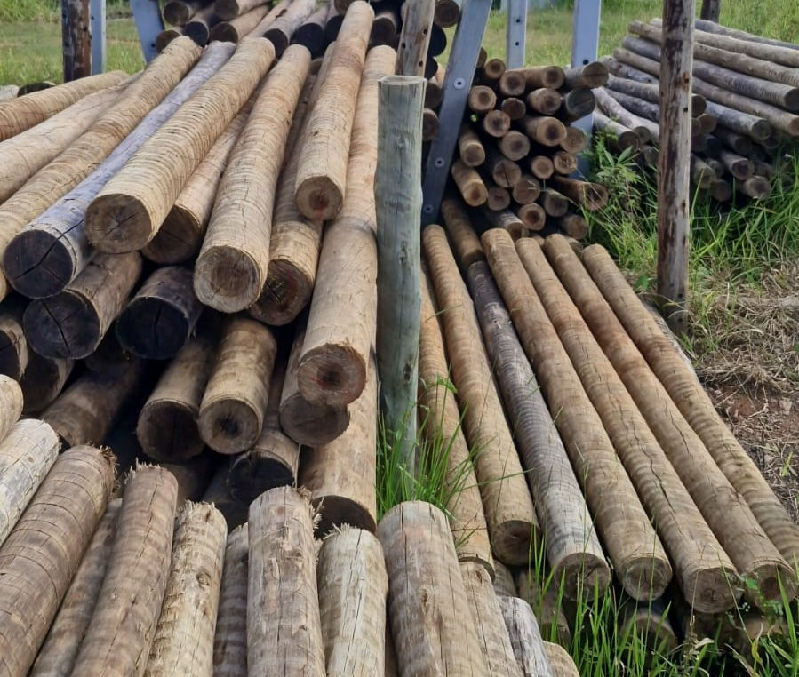
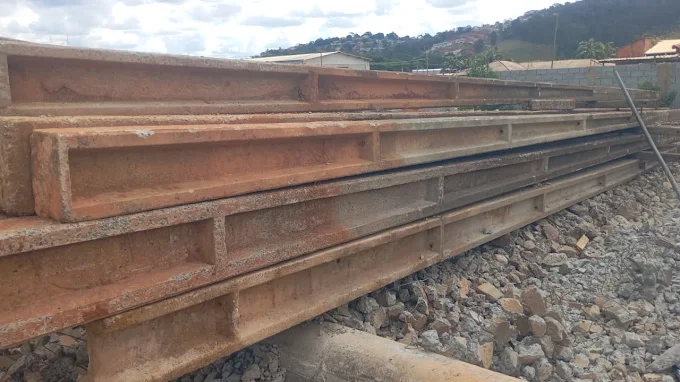
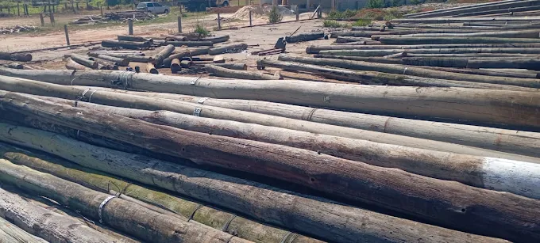

Com mais de 20 anos de experiência e atuação, Celso Arpuí é referência em postes de concreto e madeira em Piracaia e região. Nossos produtos são fruto do reaproveitamento de materiais descartados pela industria de energia elétrica, aliando qualidade técnica e sustentabilidade ambiental com preços imbatíveis. Atendemos Grande São Paulo, Região Bragantina, Vale do Paraíba e Região Serrana, além de outros estados. Solicite seu orçamento!
📋 Ver tabela de preços
Nossos Produtos
Qualidade e Sustentabilidade para seu Projeto

🌳 Eucalipto Tratado
Ideal para decks, cercas, pergolados, telhados e estruturas rústicas. Tratamento autoclave que garante durabilidade e resistência a cupins e intempéries.

🏗️ Postes de Cimento
Postes de concreto (Duplo T e Tubular) para iluminação pública, redes elétricas e cercas. Fabricados com concreto de alta resistência e armadura robusta.

🪵 Postes de Madeira
Postes em madeira de lei tratada, perfeitos para redes de energia, telefonia e projetos rurais. Combinação de resistência e estética natural.
🛤️ Dormentes
Dormentes de madeira tratada para ferrovias, contenções, paisagismo e projetos de decoração rústica. Alta durabilidade e suporte.
⚡ Cruzetas
Cruzetas de madeira, de concreto, de fibra e poliméricas para redes elétricas e telefônicas. Fabricadas conforme normas técnicas para máxima segurança.
🔩 Ferragens
Parafusos, conectores, abraçadeiras e acessórios metálicos para fixação de postes, cruzetas e estruturas de madeira. Tudo para sua obra completa.